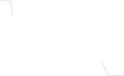

ПОДДЕРЖИВАЕТ 1012 ЯЗЫКОВ
EB garamond
10 НАЧЕРТАНИЙ
EB Garamond — это свободный (бесплатный) шрифт с засечками, который является цифровой ревизией исторических шрифтов XVI века. Это один из самых уважаемых и качественных свободных шрифтов в своем классе.